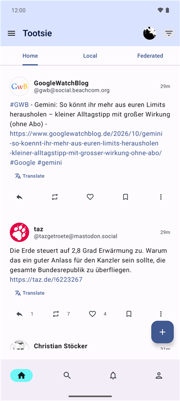
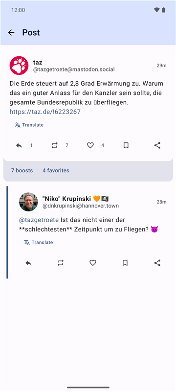
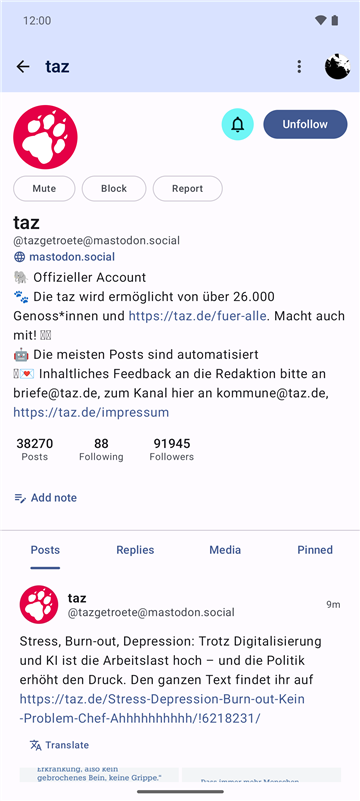
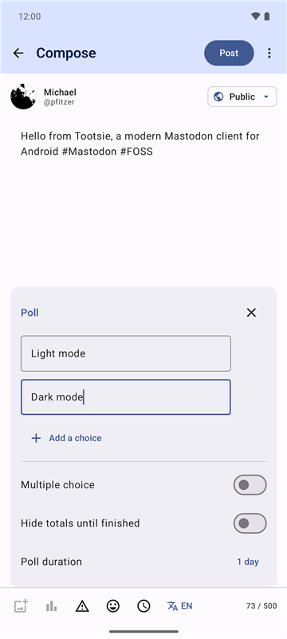
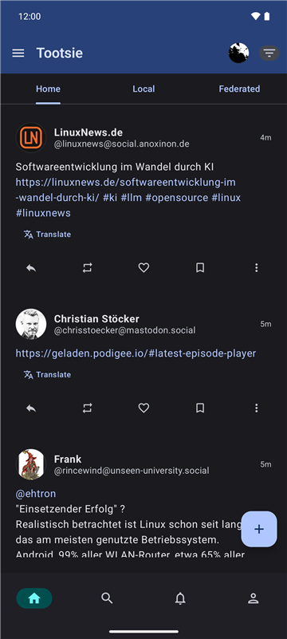
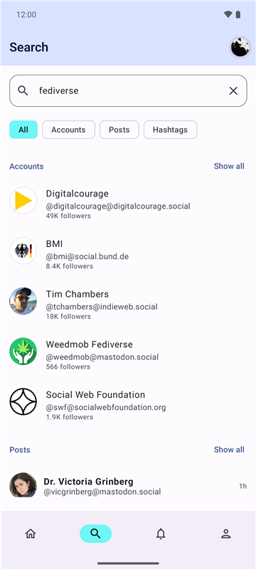
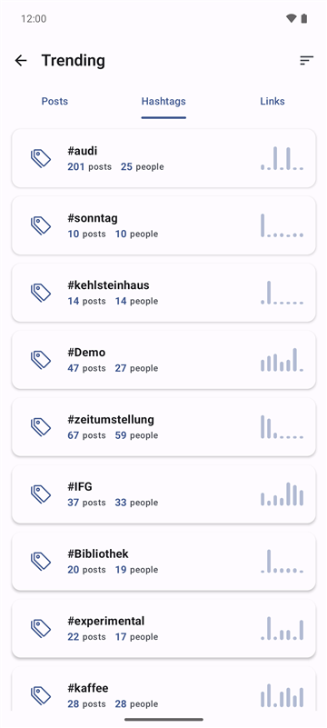
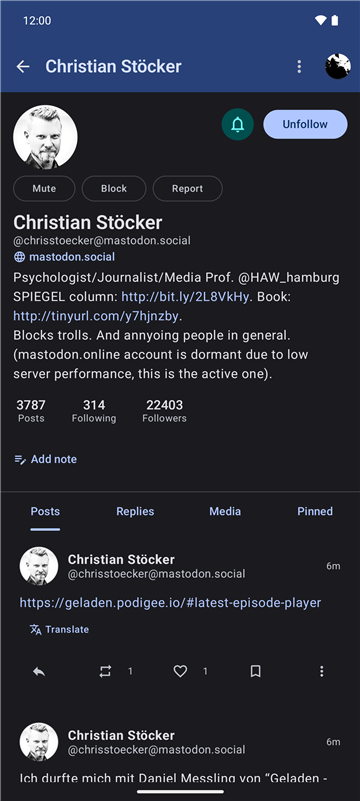
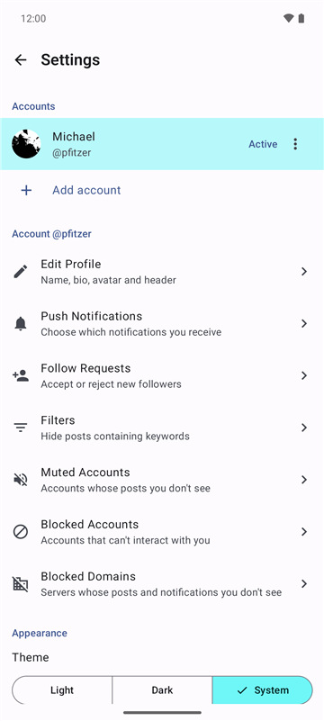

Ein moderner Mastodon-Client für Android
Schnell, übersichtlich und datenschutzfreundlich. Freie Software, ohne Tracking und ohne Google-Dienste.

Funktionen
Timelines auch offline
Home, lokal und föderiert werden auf dem Gerät zwischengespeichert und lassen sich auch ohne Verbindung durchscrollen. Die Lesestelle wird mit dem Web und anderen Apps abgeglichen.
Schreiben, wie du willst
Umfragen, Inhaltswarnungen, Bildbeschreibungen, sensible Medien, eigene Emojis und Autovervollständigung. Entwürfe werden automatisch gespeichert.
Geplante Beiträge
Wähle einen Veröffentlichungszeitpunkt und verschiebe, bearbeite oder lösche geplante Beiträge später.
Bearbeiten, löschen, neu verfassen
Korrigiere veröffentlichte Beiträge, sieh dir den Bearbeitungsverlauf an oder lösche einen Beitrag und öffne ihn erneut als Entwurf.
Beiträge übersetzen
Über den Übersetzungsdienst deines Servers oder mit der Übersetzer-App deiner Wahl.
Mehrere Konten
Wechsle sofort zwischen Konten auf verschiedenen Servern und poste von jedem aus.
Entdecken
Suche nach Konten, Beiträgen und Hashtags, folge Hashtags, stöbere in Trends, Listen, Lesezeichen und Favoriten. Zitat-Beiträge ab Mastodon 4.5.
Alles unter Kontrolle
Schlagwortfilter, stummschalten, blockieren, ganze Domains blockieren, melden. Follower-Listen, Benachrichtigungen bei neuen Beiträgen und private Notizen.
Barrierearm
TalkBack-Aktionen an jedem Beitrag, beschriftete Knöpfe und Medien, einstellbare Schriftgröße, helles und dunkles Design. Deutsch und Englisch.
Screenshots








Datenschutz zuerst
- Kein Tracking, keine Analyse, keine Werbung. Tootsie hat keinen eigenen Server und sammelt nichts.
- Keine Google-Dienste. Push-Benachrichtigungen laufen über UnifiedPush mit einem Verteiler deiner Wahl; die Nachrichten sind verschlüsselt und werden erst auf deinem Gerät entschlüsselt.
- Deine Daten bleiben bei dir und deinem Server. Zugangsdaten werden mit einem Schlüssel verschlüsselt, der dein Gerät nie verlässt, und landen in keinem Backup.
- Offener Quellcode unter der MIT-Lizenz, damit jede und jeder nachprüfen kann, was die App tut.
Alle Details: Datenschutzerklärung